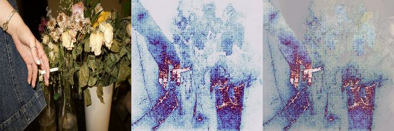
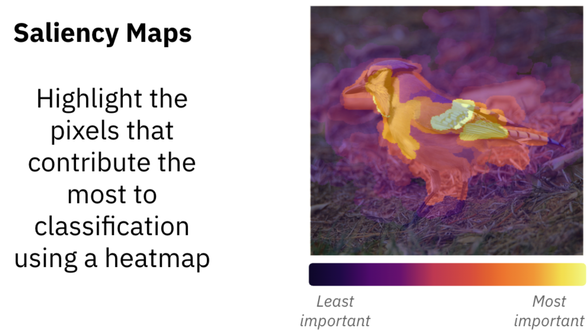
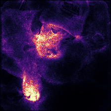
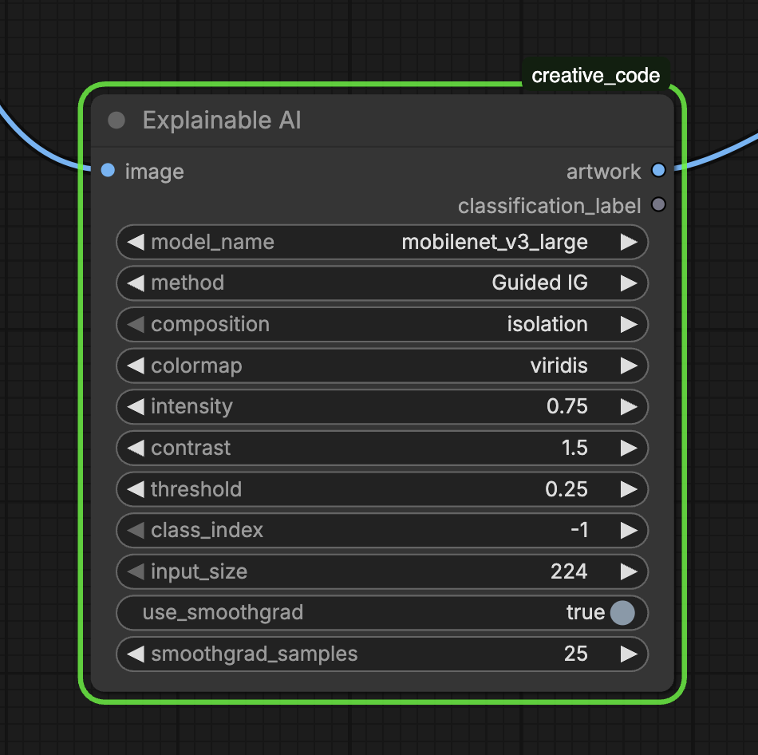

Portraits of Algorithmic Attention
Portraits of Algorithmic Attention turns saliency mapping into image-making. Instead of treating neural attention as purely diagnostic, the project makes it visible as portraiture — asking what it means to look at machine attention not just as data, but as a visual medium.
// understand


Why Start Here
I've been interested in Explainable AI (XAI) for some time now, and wanted to actually understand how it works.
XAI is often described as “a set of processes and methods that allows human users to comprehend and trust the results and output created by machine learning algorithms.” In practice, I was especially drawn to saliency mapping — a visual way to show what areas of an image are most significant for ML classification.
I do research with PhD student Katelyn Morrison, and learned about her work with saliency mapping. Seeing those visual explanations immediately made me wonder: could I make art using ML classifications?
// define
The core question: when a model classifies an image, which pixels drove that decision?
And underneath that, a harder question: what does it mean to render that attention as something you can look at?
My work is about making the classification more visible, and asking what it reveals about how these systems actually see — and don't see — the world.
// design

Expose the Decision
The tool needed to expose two layers of decision-making: the model, meaning which network is doing the classifying, and the method, meaning how we ask it to explain itself.
I selected seven convolutional neural networks trained on ImageNet, a dataset of 1.2 million images across 1,000 categories. CNNs are useful for saliency visualization because you can calculate the gradient to measure: if I changed this pixel slightly, how much would the model's confidence change? High gradient means the model is paying attention to that pixel.
Model Personalities
The models differ in architecture, which changes the character of their attention; where they look, how diffuse or concentrated it is, and how coarse or fine-grained the results feel.
VGG16 and VGG19 produce coarse, surveillance-like sweeps. ResNet50 and ResNet101 produce more semantically coherent maps that better reflect what the model actually used to decide. DenseNet121 creates distributed, multi-scale patterns with a kind of collective memory quality. InceptionV3 can look almost fractal. MobileNetV3, optimized for minimal compute, tends to fixate on single small regions — the cheapest path to a confident classification.
For saliency methods, I included six options ranging from Vanilla Gradients to XRAI to Guided IG. Each asks the model to explain itself differently, and gets a different answer. Finally, ten composition modes control how the saliency map is placed back onto the image. The one I find most conceptually interesting is invert, which flips the frame entirely to show what the algorithm ignores instead of what it sees.
// develop

Build the Tool
I created the tool as a custom ComfyUI node set using PyTorch and Google's PAIR Saliency library. The node exposes gradient-based saliency at the workflow level, so any ComfyUI pipeline can use it upstream or downstream of image generation.
I liked ComfyUI as a home for this because it makes the system more accessible to non-technical users and supports batch processing, iteration, and composition naturally.
Parameters include model selection, saliency method, composition mode, colormap, intensity, contrast, threshold, class index override, and SmoothGrad configuration. The class index override is especially useful artistically: it lets you force the model to visualize attention for a class it didn't predict, making the categorical logic visible even when it misfires.
// validate
Running the tool on a range of images revealed attentional differences between models clearly. You can view the full documentation writeup here. The more interesting validation, though, was conceptual.
I ran the tool on a photograph of my dad and sister from about twenty years ago. The models struggled to classify it at all, cycling through predictions like croquet ball, goldfish, mailbox. The attention maps made that confusion visible.
These are twelve different saliency mappings of the same image — not just technical outputs, but portraits of a model trying and failing to understand a family photograph.

// exhibit